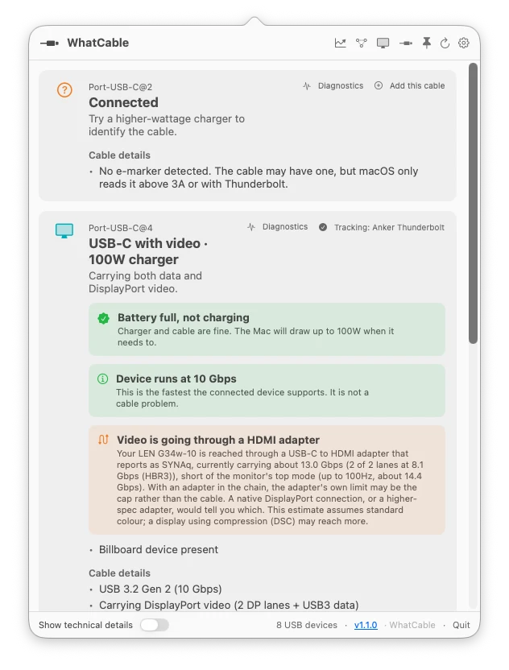
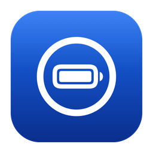
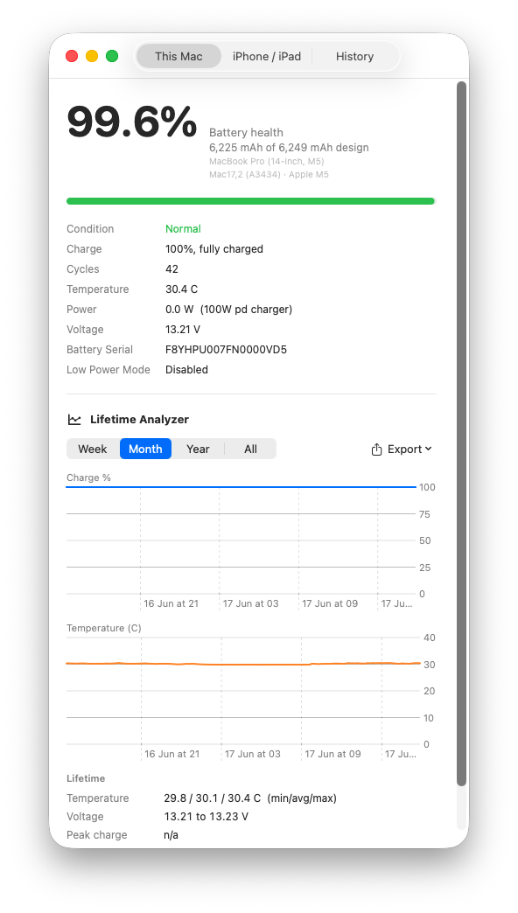

Available now
WhatCable
What can this cable actually do?
Identify a USB-C cable, see its power and data capabilities, and find the weak link in a connection.
Explore WhatCable
Independent hardware intelligence
Bitmoor builds focused Mac apps that explain the cables, ports, batteries, storage and cameras you rely on—using evidence reported by the hardware itself.
The cable is limiting this connection to 480 Mbps.
Claimed capability compared with negotiated state.
The What family
Each Bitmoor product answers one hardware question exceptionally well.
Available now
What can this cable actually do?
Identify a USB-C cable, see its power and data capabilities, and find the weak link in a connection.
Explore WhatCable
Available now
What is this port doing right now?
See the protocol, speed, lanes and live power on every USB-C and Thunderbolt port.
Explore WhatPort

Available now
How healthy is this battery—and how is it ageing?
Understand real health, live power and long-term wear across your Mac, iPhone and iPad.
Explore WhatBattery
In development
Is this card genuine—and does it deliver what it claims?
Inspect identity, flag suspicious cards and verify real capacity and measured performance.
View developmentPrivate development
What does this camera actually report?
Surface the identity, formats, modes and capabilities a camera exposes to your Mac.
Already in the wild
WhatCable is the first expression of the Bitmoor approach—and people are already using it to replace hardware guesswork with evidence.
Hands-on review
“In every case, the app correctly identified their capabilities within seconds.”
Cult of Mac
10 cables tested
“I decided to spend the $13 on the pro version of WhatCable and I’m glad I did.”
Tom’s Guide
Independent write-up
“A tiny app that does one thing, does it well, and solves a big problem.”
Houston Chronicle
Shared intelligence
Each app examines a different part of the hardware around your Mac. Together, they build a deeper understanding of device identity, advertised capability, negotiated state and real-world behaviour.
That growing knowledge helps Bitmoor move beyond displaying properties—and towards explaining relationships.
A clear answer, with the evidence behind it.
How we work
Bitmoor is being built as an independent source of hardware understanding. That means showing where an answer came from—and where the evidence stops.
Bitmoor reads the signals hardware and macOS expose, then separates reported facts from interpretation.
The apps are built around local, read-only diagnostics. Hardware data is not background telemetry.
When the evidence supports “worth checking” rather than “definitely faulty,” that distinction matters.
About Bitmoor
Bitmoor builds native software that translates low-level hardware signals into useful explanations of capability, compatibility, performance and faults.
Founded in the United Kingdom by Darryl Morley.
The What family